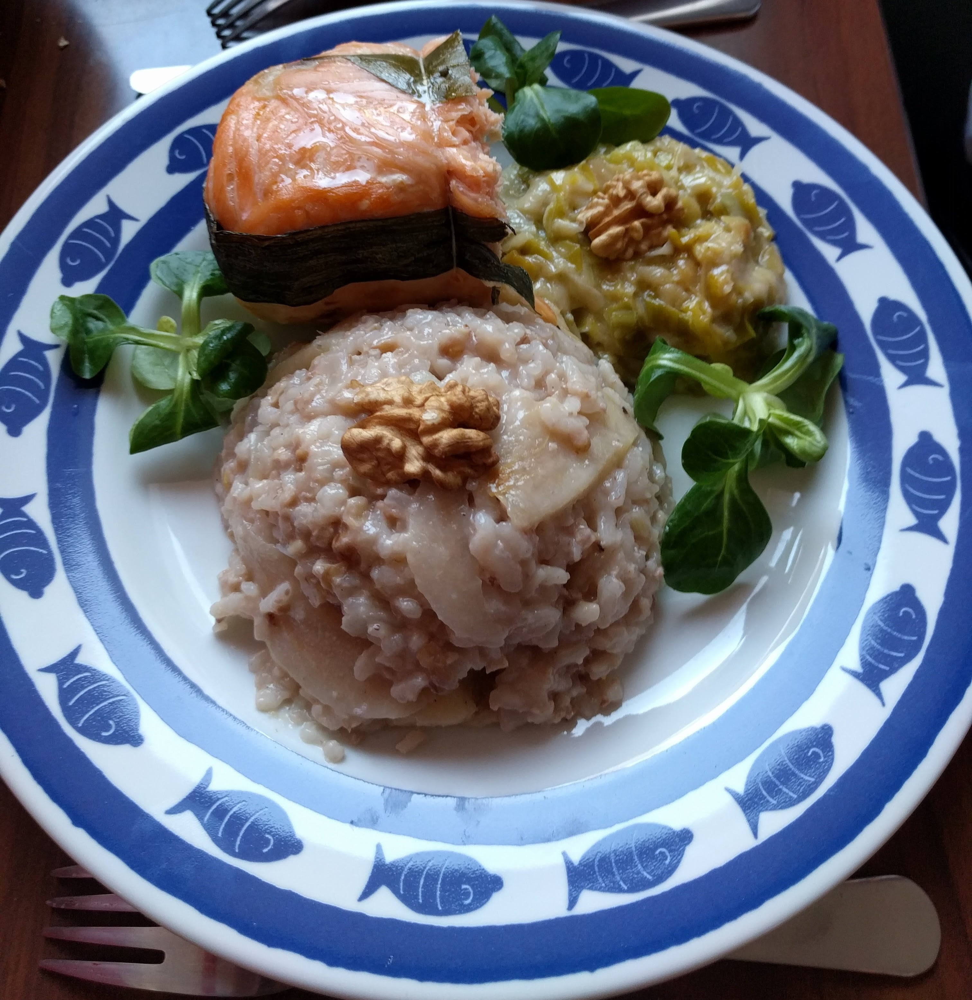

Risotto aux poires et aux noix

Pour 4 personnes (6 en accompagnement) :
- 300g de riz complet
- Deux grosses poires bien mûres
- 250g de noix (entières, ou 100g de cerneaux)
- Un gros oignon
- 15cL de vin blanc
- Un litre de bouillon de légumes
- Un citron
- Poivre, huile d'olive
- Porter un litre de bouillon de légumes à ébullition.
- Éplucher et couper l'oignon en petits bouts, les faire revenir dans une poêle à bords hauts avec de l'huile d'olive.
- Ajouter le riz et le laisser cuire quelques minutes à feu doux en remuant jusqu'à ce qu'il devienne translucide.
- Ajouter le vin blanc et le laisser s'évaporer à feu vif.
- Ajouter le bouillon louche après louche en remuant jusqu'à absorption.
- Pendant que ça cuit, zester le citron, presser son jus, éplucher les poires, les couper en lamelles fines et réserver tout ça dans un bol. Casser les noix et les écraser grossièrement au pilon, en gardant quelques cerneaux pour la déco.
- Ajouter poires, citron et lamelles en fin de cuisson ; mélanger délicatement et poivrer généreusement. Servir chaud en décorant avec des cerneaux.